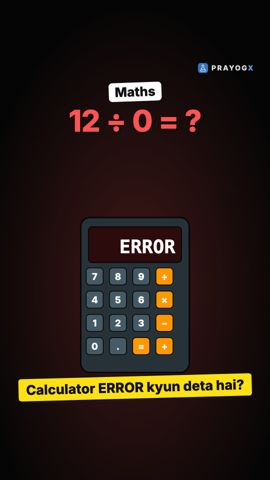

Extra / Supplementary Mathematics
Curious ideas beyond the syllabus, grouped by theme.
 Why 0.999… Equals 10.999… with the 9s never stopping is exactly 1, not "a little less". Three short proofs show why.Numbers and infinity · Mathematics
Why 0.999… Equals 10.999… with the 9s never stopping is exactly 1, not "a little less". Three short proofs show why.Numbers and infinity · Mathematics
Why Division by Zero Is UndefinedA calculator says ERROR for 12 ÷ 0 because no number times 0 gives 12. It is not infinity either.Numbers and infinity · MathematicsNo topic matches. Try a shorter word.